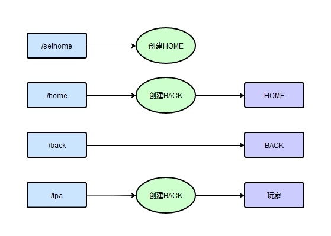

在此页面更新一些插件
理论支持本站的所有振金版，娱乐版
如有错误，欢迎反馈
地精传送MITETPA
写了一个服务器传送插件。（单机可用）
支持玩家间跨界（维度）传送。
客户端放到.minecraft\coremods\
服务器放到coremods\
运行时会在coremods\TPA\文件夹下生成配置文件。
注意：
- 装新版本插件请删掉TPA文件夹
- 开新档时建议删掉coremods\TPA\ 下的所有.ga文件
更新v1.1
①所有的修改均不需要重启生效
更新v1.2
①使服主（管理员）可以在游戏内添加白名单
②可以关闭白名单模式
可用指令
/sethome（设置当前位置为家）
/home（传送到家，默认禁用）
/back（传送到上个位置，默认禁用）
/tpayes（自动接受所有tpa请求）
/tpano（自动拒绝所有tpa请求，默认拒绝）
/tpa 玩家名（传送到玩家位置）
/tpaadd 玩家名（管理员可用，@a=全体在线玩家）

初次运行服主需要手动修改两个ini文件，
①tpaConfig.ini是配置文件
（0=关闭，1=打开）
home=1时允许/home
back=1时允许/back
time=30（传送冷却，3-3000，单位：秒）
whitelist=1时开启白名单
admin=管理员名（注意，不能为中文，可以用本网页下面的转码工具转成mc编码）
②tpaList.ini是传送白名单，
将玩家名依次填入，每行一个。
不在名单上的无法传送。
中文名需要转成mc编码，或者让管理员直接游戏内添加
举例说明一
玩家Akarin想要传送到玩家Banana
①将Akarin加入tpaList.ini
②Banana输入/tpayes
③玩家Akarin输入/tpa Banana
举例说明二
玩家Akarin在矿洞死亡了，想要记录back点
①Akarin死亡后，不要点复活，直接输入/home飞尸
②Akarin点复活
③Akarin拿上物资输入/back回到死亡点
举例说明三
管理员要将【大_PI】添加到白名单
方法①将大_PI转码为\u5927_PI，打开tpaList.ini，将\u5927_PI添加到新的一行
方法②管理员游戏内输入/tpaadd 大_PI
方法③管理员游戏内输入/tpaadd @a
/home /tpa 都会自动记录back点
玩家死亡不会自动记录back点
下载地址见本站主页下载链接页面
度娘盘【插件】目录
中文玩家名 ←转→ mc编码（unicode）
在这里输入中文玩家名或者mc编码
雪花量片